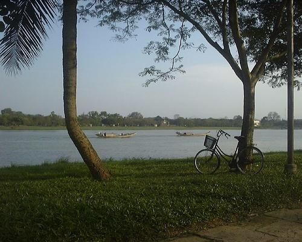
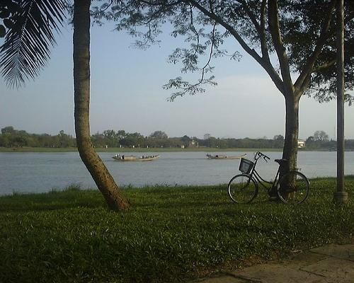
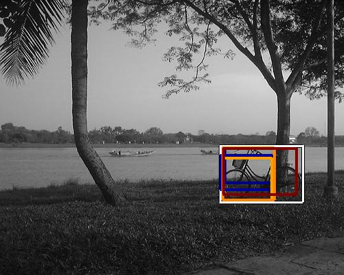
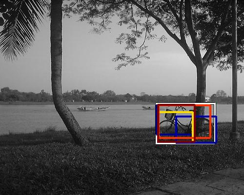

0.833611

0.886350

0.901759

0.920771

0.954070

0.966120

0.969556

0.998271

1.000074

1.014286
| Target image  | 0.833611 | 0.886350 | 0.901759 | 0.920771 | 0.954070 | 0.966120 | 0.969556 | 0.998271 | 1.000074 | 1.014286 |
Target image |  25154.476562 |  11265.759766 |  10556.740234 |  9953.943359 |  8051.680664 |  7600.230469 |  7595.464355 |  6005.807129 |  5226.519043 |  4411.358887 |
Target image |  12897.296875 |  11308.400391 |  10788.505859 |  8255.033203 |  7843.294922 |  6186.420898 |  4782.720703 |  4738.671875 |  4595.444824 |  4056.761230 |
| Target image  |  27770.300781 |  9134.519531 |  8552.533203 |  8026.592773 |  7346.682617 |  6990.995605 |  6793.468750 |  5927.537109 |  5902.858398 |  5450.860352 |
| Target image  |  8301.060547 |  7276.151367 |  5330.684570 |  4668.378906 |  4164.825684 |  3852.782227 |  3724.328613 |  3536.265625 |  3499.516113 |  3496.561523 |